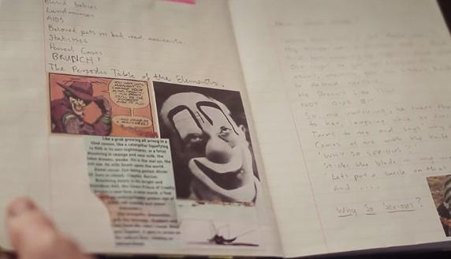
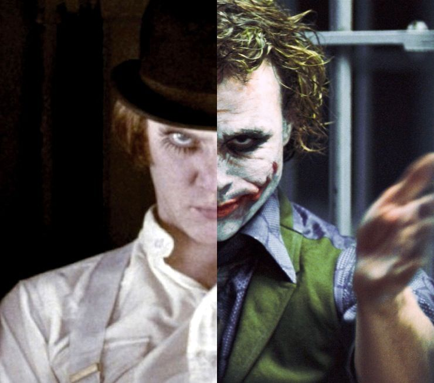

¿Heath Ledger fue realmente el mejor Joker?..
Reconocida todavía por muchos como la mejor encarnación de el príncipe payaso del crimen, la versión que realizó Heath Ledger en la trilogía de 'The Dark Knight' ha sido la más compleja y la que más ha marcado al personaje y aquí te explicamos por que sigue siendo el mejor Joker de la historia, a casi 12 años del fallecimiento del actor.

Aislamiento
Ledger pasó la mayor parte del tiempo que dedicó a preparar el papel de Joker encerrado en la habitación de un hotel de Londres. Allí pasó unas seis semanas, alejado de todo y de todos, trabajando en su personaje y desarrollando sus tics, su alocada voz y esa risa sádica que hicieron de su Joker algo casi perfecto. Recordemos que -al igual que ha sucedido con otras elecciones de casting recientes como la de Ben Affleck como Batman o la del propio Leto como nuevo Joker- muchas fueron las voces que se alzaron con vehemencia contra el australiano. Entonces se decía que no podría ni llegarle a la suela de los zapatos al Joker de Jack Nicholson. Evidentemente, estaban más que equivocados.
El diario de Joker
Durante las semanas que pasó aislado en Londres, Ledger documentó ese intenso y solitario viaje de descubrimiento del sociópata que se enfrentaría al Batman de Bale en un diario. Un libro de notas que luego le acompañó durante todo el rodaje de la película y con el que podía volver a sumergirse en el macabro y oscuro universo mental que había creado para su Joker.
{kind=link}
Locura calculada
Más allá de que Ledger tuviera pintura blanca en las manos para dejar claro que había sido él mismo, el propio villano, quien se había proporcionado ese aspecto tan turbio y desordenado, el de la cara de Joker era un caos perfectamente calculado. Una obra 'abstracta' si se quiere decir de un artista del maquillaje.
La inspiración de Heath Ledger
Deliberadamente, el actor intentó llevar el personaje a un terreno completamente distinto de lo que había hecho Jack Nicholson en la Batman de Tim Burton (1989), hasta ese momento la caracterización más emblemática del personaje. Para su apariencia, se inspiró en Sid Vicious, legendario rockero punk de la banda inglesa Sex Pistols, mientras que para sus gestos y movimientos se inspiró en Alex De Large, el personaje interpretado por Malcolm McDowell en La naranja mecánica (1971)..
{kind=link}
Mas realismo
Por si todo lo anterior no fuera suficiente para evidenciar la seriedad y el compromiso con el que Heath Ledger se tomó a este personaje y su interpretación, Christian Bale aseguró en una entrevista que su compañero de elenco le pidió que, durante la escena del interrogatorio, en la que Batman le da una golpiza al Joker, le pegara realmente y que lo hiciera tan fuerte como lo haría Batman, con tal de darle mayor realismo a la escena. Sin duda una actuación fenomenal donde un joven y prometedor Heath Ledger entrego todo de así, que no solo le valió el cariño de los fans...si no también varios premios y nominaciones entre ellos un premio póstumo de la academia,sin duda la mejor actucion del Joker en la historia.